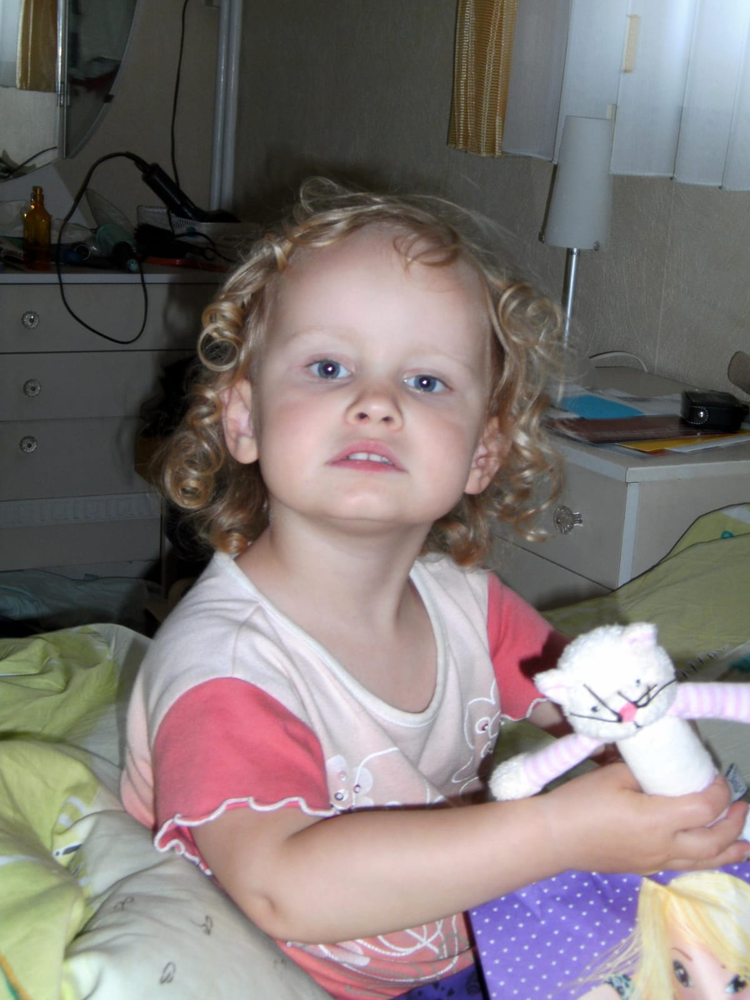

Aubout me!
My name's Caitlin, I'm 17 years old and I love reading, drawing, and expressing myself. I'm currently
studying
ICW in school but aspire to study
Game graphic productions in college. I was born in
Germany
but we quickly moved to
Belgium soon after (my mom's German and my dad's Belgian). I have one sister
who is absolutely amazing and I have three cousins. I used to do sciences, but switched to ICW to
pursue my dream of making
video games.

back